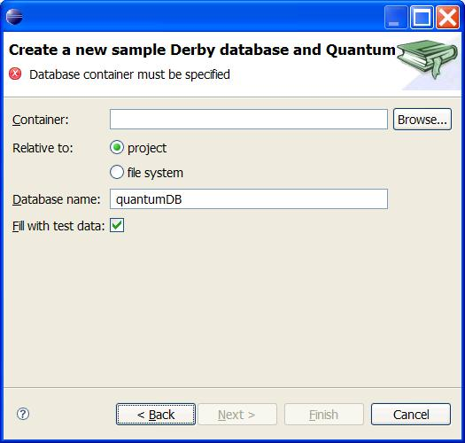

This part of the QuantumDB plugin documentation, is something everybody sets out to write, but can never finish.
Let's paste in the mission statement from the project admin: My idea
of the "Field Guide to Quantum" would be something like a cookbook for developers.
Ideally it would have recipes for the most usual things done, so that a developer
that wants to do something relatively simple doesn't feel imposed by the volume
of code. I'd like to give "entry points" in the form: "If you want to modify
a menu in the bookmark view, you have to do it in the ... file, modifying such
and such methods, with such and such caveats, and preferred style is not to
disable menu items but explain in a message box why it cannot be executed".
"If you want to add support for a new database, you have to modify files a,b
and c, and doing it so." ... ... Hmmm. If I hadn't so many things to do, I'd
feel like doing it now, my fingers are itching to write it, but I'll contain
myself, the in-laws are coming, and a lot of them, to boot.
So, after one of the best excuses in the business, the initial task fell to me.
And I decided to treat as a blog kind of thing. Because I joined the project late, bringing in SQL Server knowledge, not because it is my favorite database, but because I come across it during work a lot and I kept getting runtime errors there, that I thought should be obvious at 'write' time. So, I did a feature request, and got involved. To prove my coding abilities, I had to perform several tests, before I was allowed to put my features in. The document below describes the process. The intention is to outline how to implement new features in Quantum, given it's architecture, trying to improve on that architecture in the ever changing eclipse environment, whilst keeping backward compatibility.
Clearly an impossible task.
This document will discuss the following features:
My first assignment was to contribute a search feature to the Quantum plugin. It had to be explained to me, before I understood what I had to make: The user enters a number or a text substring and the search utility searches through the selected items in the bookmark view in each applicable field of the tables or views.
The way to do it was of course to dynamically create a query for each selected item in the bookmark view containing the search text in the where clause.
Then it starts to hit you that Quantum aims to support all databases. At least those with a JDBC driver, and those with an ODBC driver for which you can use the JDBC-ODBC driver. Would they all use _ and % as wildcards? Do they support LIKE? What about case sensitivity?
Then as an eclipse and Quantum newbie, I ran into all kinds of stuff that looked like simple stuff, such as adding an entry in the context menu to start the search, finding out the selected items in the bookmark view, designing the search dialog and of course running queries and obtaining the results.
The com.quantum.actions namespace
is the central place for all actions. The trick is to copy an implementation
that matches the new thing you want to add and use the Refactor Rename feature
in eclipse to give it an appropriate name: SearchEntityAction.
In some implementations or plugins one has to worry about enable/disable logic, but one of the design rules in Quantum is that the actions are always enabled, and when something is not supported or not useful a message box will inform the user that the action will not be run at that time.
Add an image to the icons directory and add a description to com.quantum/QuantumResources.properties
file.
If your action inherits from SelectionListenerAction, you will be able to access the items selected in the Bookmark View.
Just as all actions are defined in the com.quantum.actions,
the views are found in com.quantum.view
and underlying packages. The bookmark view defines its own namespace: com.quantum.view.bookmark.
The bookmark implements a Tree control in which all elements are shown. It starts
with a database bookmark and allows you to drill down to columns in a table
or view definition and parameters of stored procedures. Plus what anyone has
added to it...
A node in a tree is aptly named TreeNode and is the base class for the specialized nodes. A DbObjectNode represents something that is found in a database: these things are called EntityNode and ProcedureNode. These include tables, views, procedures, functions, packages.
Columns and procedure arguments are derived from TreeNode directly.
You can search on a selection of DbObjectNodes, or on all tables or on a combination of that. The plugin will inform the user if the selection is valid for searching or not.
A viewer is an interface in your deals with the tree widget, that is
the animal that finally displays the beautiful texts and images on the screen.
But the viewer is easier to work with. Instead of having to tell it all the
things you want displayed, the viewer is much more lenient. At the beginning
of your relationship, you provide the viewer with a single object (via setImput()).
The viewer will use that object to call its content provider (in our
case BookmarkContentProvider) and will ask it simple questions like does
this object has any children (to show the plus sign).
In Quantum's case the single object given is an object of type BookmarkListNode, member of the big and happy family of Quantum TreeNode objects. Those objects are arranged in a tree, with the BookmarkListNode root having the bookmarks, those bookmarks containing the tables, views, etc (when the bookmark is open, of course), and so on. All those are TreeNode objects, and so can return their children nodes if asked.
Then to properly show the objects it's got, the tree viewer will ask the label
provider (in our case, as you were rightly guessing, BookmarkLabelProvider)
for the image and text to be displayed for that objects he has, and display
them. Then depending on what the user does with the widget, like opening one
leaf by clicking on the plus sign, the viewer will ask to the content provider,
"eh you!, remember that object we talked about and you promised me he had
children, well, you better tell me how many and their addresses (via getChildren()),
because the fsckng user wants to see them. And tell me also if they have children
of their own, to show the plus signs". The content provider answers with
the children, the tree viewer asks again to the label provider about how to
picture them, and if one of the children gets opened, the tree viewer will ask
again about it. And so on and so forth, till someone says it has no children,
or the user stops clicking like mad.
In Quantum usually we implement lazy loading, that is, in many instances the plus sign is false, returned by the content provider to avoid having to load the table names. Only when the user clicks on it and requests it to open, will Quantum really ask for the data to the database, and perhaps find out that there was no tables there, and so the plus sign wasn't real. That's a sacrifice the user has to make, bartering it for speed.
Of course, if you know that something has changed in the underlying data that
is depicted in the tree (for example when we open a bookmark), you will want
it to be redraw, all or a part of it. It's your responsibility to make it known
to the tree viewer. You have several methods for that in the TreeViewer
class. If just one existing item has changed, but no new children have been
added or deleted, that is, the shape of the tree is the same, you should use
the update() method of the treeviewer. You give to the update() the object to
be redrawn (for example a column node), and it'll find it in the tree and redraw
it. If however the shape of the tree has changed, for example you have added
a new leaf or deleted one, you have to use the refresh() methods, to which you
have to provide the object from which you want the tree redrawn, that is, usually
the parent of the deleted or added leaf.
Now, (and I want you to follow me like a leopard) you don't want to directly call the refresh() or update() methods of the treeviewer directly. First because you don't usually have the object ready, and second because a more decoupled method is usually better for building big structures. So what you do is to use the listener idea. Your view class (BookmarkView) is the one that has the tree viewer object ready to call, so it'll be the one calling it with the update() and refresh(). But to know when and how to update the tree, it needs to listen to the changes of the underlying data, that is grouped in the original object given to the content provider (in our case is a BookmarkListNode that will be the final ancestor of bookmarks, tables, and all kind of other TreeNodes, so in fact it represents the whole data available). To listen to changes of the underlying data, the said underlying data has to implement a way of telling all interested that something has hanged.
That is of course the "PropertyChange" mechanism. I'll explain in detail the PropertyChange system, also for reference, as you may probably know all about it. I know I didn't know it all till yesterday, although that didn't hamper me from using it, of course. So when we are in a situation like depicted, that is, some data that may change and some interested parties that want to know about it. The data that may change, let's call it model, will welcome all interested parties to register with it so that it'll know to send a notice when the data change.
Now, you could think of implementing the notification system yourself. You'd do a list of interested object, an addToInterested function, and then when something changes in your data, make a loop with all the interested, saying something like " for... { interested[i].notifyChangeHappened(); }". Of course you'd have to agree with all interested object that they must implement the "notifyChangeHappened()" function, or the code won't compile. The addToInterested() function will of course receive an object, because you really have no idea of who is going to be interested in your changes.
But as the problem is common, java has already a mechanism for doing this more
or less painlessly, and thread safe, and supporting primitive objects, and all.
The model will simply add an object of type PropertyChangeSupport, that
will manage the list of interesteds and so on. We can read PropertyChange as
"data change". You will create the addPropertyChangeListener()
(our former addToInterested()
function), that will simply wrap the propertyChangeSupport.addPropertyChangeListener()
function to add the interested object to the PropertyChangeSupport list. Then
when the model data change, the model will simply call the propertyChangeSupport
object's firePropertyChange(),
that will do our old " for... { interested[i].notifyChangeHappened(); }".
The mechanism also has allows for different kinds of changes to be sent, in
case some interested parties are only interested in a kind of changes (that's
called the event type, and you send it like an arbitrary string). You also can
send the previous value of the changed data and the current value so the listener
(interested party) has that info too.
In Quantum we have a tree of TreeNode objects that will be displayed in the
tree widget. The root of the tree will be a BookmarkListNode object. This is
the object that will be our "model", so it's the one that will implement
the PropertyChangeSupport. However, to signal a change in a lesser node, as
all are descendants of the TreeNode, all can call the "firePropertyChange()"
function. That call propagate upwards (via an ingenious if rather fragile scheme)
till it finds the root, that will be the one calling its propertyChangeSupport
object, and so all interested parties registered with it. The interested parties,
as we said, must implement the notifyChangeHappened() function, that in the
java mechanism is called "propertyChange()". To ensure
it, they must implement the interface PropertyChangeListener. Usually
you do that via an inner class definition, adding an object of type PropertyChangeListener,
and defining the function there, as it's usually brief. If we want, we can implement
the interface in our object, as we do in Quantum in the BookmarkView object.
Then you have to implement the propertyChange function there, as we do. This
function will be called with every change that happens to the model (if the
model is well programmed, of course), being its parameter a grouping of the
type (a string to be able to know which kind of change has happened), the old
value of the changed data and the new value. Those three are grouped into a
thing called an "event", in this case a PropertyChangeEvent.
The event also and most importantly will have the "source", that is,
a reference to the object that did the whistleblowing about the change. So even
if the call is done always by the BookmarkListNode object, the source can be
another node. Inside the function you interrogate the event to know what has
happened with the model data, and so what do you need to tell the tree viewer
to update or to refresh. And so the circle is complete.
Suppose you want to change the appearance of a node. For example you want to
change the image displayed for each column depending on the data type of it.
You could use decorations there but in general decorations are meant to signal
an state change in a resource, and the data type is a fundamental property of
the column. So you design a new image for numeric, another for text... The responsibility
of giving those different images to be displayed will fall on the label provider,
of course. So now when the label provider is interrogated about the corresponding
image of an object of type ColumnNode, it answers with an image and the name
of the column. Of course, as we have a nice data structure, we want to group
all those things about a ColumnNode into the same ColumnNode class. So in Quantum's
implementation, the label provider will just ask the corresponding object about
its image, using the (ColumnNode) function getImageName(). This
function is now :
/* (non-Javadoc)
* @see com.quantum.view.bookmark.TreeNode#getImageName()
*/
protected String getImageName() {
if (this.column.isPrimaryKey()) {
return ImageStore.KEYCOLUMN;
} else if (this.column.isForeignKey()) {
return ImageStore.FOREIGNKEY;
} else {
return ImageStore.COLUMN;
}
}
So there are different images if the column is a foreign key or a primary key. You'll have to take that into account. Perhaps those info's are better put into decorators, as are more transient than the data type, see this article to learn about decorators.
In Quantum all images used are managed by the ImageStore object, that simplifies
interaction with a standard ImageRegistry object, that will take care of managing
and disposing the images. The ImageStore will load all needed images on startup.
If you want to add images to Quantum, basically create the image file, put it
into the icons subdirectory. Then modify the ImageStore object,
adding a new constant with a key name of the image, and add it to the initialize()
function. A bit kludgy, I know, it should be just adding it to the icons subdirectory.
A good project for an enterprising user, wink, wink.
Suppose your favorite database has, besides tables and views, also yops, a
estrange database object unlike any other. You want to display the yops. First
you'd create the YopNode class, making it a descendent of TreeNode,
and giving it a name, an image, and in general implementing the parent abstract
class methods, that are fairly obvious. Alternatively you could add yop-support
to the EntityNode class, that provides nodes for Tables, Views
and sequences alike. If you go the YopNode way, you should decide if the yop
will load its children on startup, in which case you'd fill the children
vector in the constructor, of bear with the standard Quantum process and load
them only when you get the getChildren() call. If those children
are also a new type of node, you'd need to create a class of nodes for them,
too.
Now you want to add the yops to appear in the database objects, you'd go to
its parent and ensure that it'd load and return the yops when its getChildren()
is called.
Here I made an error in judgment. I looked up the standard search page in the FAQ, but it said the results could only be used if they referred to results found in files. Even that may not be true anymore with the new Callisto release, but my error was that I thought that meant that I could not contribute a search page as well. So, I created my own dialog in the first release.
Later I realized that results and data entry are not tightly coupled, so now Quantum adds a tab to the generic search dialog.
So I had the selection in the view and the text/number to search for. Now for the query.
The action is defined in the performAction of the QuantumSearchPage class.
This action creates a new SearchDatabaseQuery instance and runs this in the foreground of the eclipse search implementation.
This class runs a query for each element in the selection. To find out the columns of tables and views the
metadata of the entity is used:
Row[] rows = MultiSQLServer.getInstance().getMetaData(entity,
connection).getRows();
The meta data is then used to find out whether the column is of a type that
can be searched and is of the right type for the search (Numeric for numbers,
date for dates, etc.). This is done through the TypesHelper class, located in
com.quantum.util.sql. This helper
class might become database dependent in the future, because not all database
types have a one-to-one correspondence to the java types.
It is also vital to use the quoting function made available in Quantum, because they will go back to the database adapters and make sure that quotation is handled in such a way that the database will understand:
// We use the escape function LCASE
if (!exactly) {
if (bookmark.isStringFunction("LCASE")) {
clause = "( {fn LCASE("
+ bookmark.filterQuoteName(columnName) + ")}";
}
} else {
clause = "(" + bookmark.filterQuoteName(columnName);
}
In the snippet above, note the usage of the JDBC construct {fn LCASE(..)}. Here we trust the JDBC driver to replace the function call with the correct database specific function.
So now we have a string representing a query on a database.
This is one of the things where the learning curve in my case was very steep. I went searching for code and just could not
find the right search term. Even when writing this now I cannot say which class would be the one we need. I need to check my code
for it:
/**
* MultiSQLServer is a Singleton, used as a interface with the sql drivers.
* Use MultiSQLServer.getInstance() to get the object.
*/
SQLStandardResultSetResults results = (SQLStandardResultSetResults) MultiSQLServer
.getInstance().execute(entity.getBookmark(),
connection, entity, select + query);
And of course this class is defined in com.quantum.sql:
The heart of the plugin. Select + query is the query string that was created
using the metadata as described above, the entity is the table or view, the
connection is a java.sql.Connection and the bookmark is the selected database.
Use the Quantum Log view to see what query was executed against which bookmark.
As you can see the results (if any) are reported in the form of a SQLStandardResultSetResults, which derives from SQLResultSetResults, which in turn derives from SQLResults. The execute uses a java.sql.ResultSet and transforms that into the Quantum construct.
These results are accessed by rows and columns.
The search utility processes these results even further to handle case sensitive searches. Even if your database is not configured to these kind of comparisons, Quantum Search will return case sensitive results if requested.
So only the matching results are added to SearchResults.
The results could not be displayed using the eclipse search results view, because they are not file based. A dedicated view had to be contributed in which we decided to put a tree: SQLSearchResultsTree. Double clicking items in the tree, would execute yet another query and show the results of that query in the 'normal' TableView.
Unless the user was searching through procedures. In that case the SQL Editor is opened with the procedure in it, and all the matching terms are highlighted.
The minimal support for Quantum is of course to use the database as Generic JDBC and trust the JDBC driver for all data. This offer a reasonable level of functionality, but when more is wanted, some particular support for that database has to be added.
You can be in the situation of wanting to add support for a JDBC driver for
a new database, or for an existing database. Quantum maintains a list of the
JDBC drivers it knows about in the AdapterFactory class. That list
is in the static Map DRIVER_MAP. In this list, the driver is associated
with a database type (a string that will serve as key for the database), and
optionally with a sample URL. If the database type you use already exists in
Quantum you are done. If not, you need to create a constant at the beginning
of the class, with the other database type constants. If your database is called
DataMax, you add a string called "DATAMAX" or something like that,
to be a constant called DATAMAX, for example. This constant will
be used as identifier of the new database inside Quantum, and it should be unique.
Then you should add a DatabaseAdapter object to the list of database
adapters "adapter", via an addAdapter()
function in the constructor of the AdapterFactory. As a start,
add a GenericAdapter(DATAMAX). The generic adapter knows no particularities
of your database, and makes nothing special, serving mainly as a placeholder.
Adding your JDBC driver to the list as we have said,will buy you one thing only. That is that, when selecting a JDBC driver file (usually a .jar or .zip), and selecting from that file as driver class, the class you added, Quantum will know the type of database associated to that class, and display it as a default (for example in the "Create new bookmar" dialog). Also, if you defined a sample URL, that URL will appear as a sample for the user when he selects your class as JDBC driver.
Also, in the sample URL you can define "parameters". Those parameters
are enclosed in curly brackets {}, and define a string that should not be taken
literally, but be substituted by other. For example, if you use as sample URL
: "jdbc:odbc:{datasource}", {datasource} has to be substituted by
the name of, in this case, and odbc connection. For some usual combination of
parameters, those are automatically parsed, and a text box appears for each
one in the dialog. When the user fills the text box, the parameters are substituted
in the URL. Nice isn't it? :o) But if your combination of parameters is new,
then you should start to work. You should change the class URLSetupControlFactory,
to add your new combination of parameters. Modify the GetControlClass()
to add your new combination of parameters, see if you can use one of the already-existing
URLSetupControl classes, and if not, add one new using one of the existing,
like BasicThreePartURLSetupControl, and add it to the family. If
you are lucky, your set of parameters will be alike many others and all this
work you'll avoid.
Now if you want to specify default values for those parameters of your database,
you can do that, but then I fear you have to create a new database adapter,
because Quantum will ask the database adapter for that data, using the function
getDefaultConnectionParameters(). So you need to create a new
specific adapter for your, and add simply that function. As all database adapters
descend from DatabaseAdapter, all the rest of the needed function will default
to the root implementation. So you create a new class, for example DataMaxAdapter()
, and make it a child of DatabaseAdapter.Remember that your adapter
class has to be identified with the DATAMAX constant, to be recognized by Quantum
and associated to your driver. So you need to add as a minimum the functions
:
protected DataMaxAdapter() {
super(AdapterFactory.DATAMAX);
}
public String getDisplayName() {
return "Datamax Superbase";
}
and change, in the DatabaseAdapter, the line that added a GenericAdapter(DATAMAX),
to simply add a DataMaxAdapter().
Then add the getDefaultConnectionParameters() function to the
adapter class (use as model one of the others, the OracleAdapter for example
is rather complete), and you are set to go. Having its own adapter will allow
your database to get more support from Quantum.
As the first contact with adding to Quantum and programming using eclipse, the search feature was a very good project. It had the right level of complexity and immediately made me aware that allthough nearly all database say they support SQL they all do it differently. And that this plugin could be the Grand Unified Database Client, as it takes that unification process much further than JDBC does.
There are things to improve with the Search. Some are decorative, such as that it would be nice to use the eclipse result page. Others are functional and database dependant, such as the SQL Server data type timestamp is treated as a text type in JDBC. Also the Search Entry could be enhanced with calendar controls and history combos.
One of the reasons I joined the Quantum DB project was caused by the fact that I kept getting runtime errors in my sql code that I thought could be fixed before it should be executed. I wanted some syntax checking and then of course all the extra's that eclipse offers for other languages as well: Quick fixes, syntax highlighting, formatting, outlining.
I had to create an editor for this, but that is another topic.
What we also needed was a formalization of the language. And that is where the troubles start. There is no 'the language'. There are only dialects that may or may not comply with a standard and most have database specific enhancements.
That is why we chose Antlr. This comes with a neat plugin for eclipse and supports grammar inheritance. The idea was to start with a base grammar for SQL-92 and allow specific syntaxes for other databases.
Let's simplify our problem. Suppose our objective is just to know the tables that an SQL statement references. For example, take the SQL statement "SELECT * FROM TABLE1, TABLE2 WHERE ID = 1", we want to know that the SQL statement references the tables "TABLE1" and "TABLE2". Of course, things get complicated when the select statement has joins, or aliases. So we need a tool that can handle that kind of things. "That kind of things" are languages, and the tool is called a parser. Antlr is a framework for parser-related tasks.
In a first approach, the input that we have (the SQL statement) is a string of characters. Antlr is very ready to handle that input. It'll convert it into tokens, that are units of a higher level than characters. For example, the string "SELECT" will be a token, the "*" will be another, "FROM" another,... Each one will have a different meaning for us, and antlr will help us but if we have "SELECT NOM FROM FROMMAGES", the "FROM" in "FROMMAGES" will not be recognized as a "FROM" keyword, and so the token will be the whole FROMMAGES word, that is exactly as we wanted it.
Now, to explain to Antlr how to treat our strings (SQL statements), we use a special syntax. You can see an example of that syntax in the file DmlSQL2.g, at the com.quantum.core.sql.grammar package.There are defined several different processing classes. The class that handles the conversion from a string of characters to a string of tokens is called DmlSQL2Lexer, so search for that, and all that's downfile till the next class, is the lexer processing class definition. The explanation of the syntax is beyond this introduction, you can find one at http://www.antlr.org/doc/lexer.html and at http://www.antlr.org/doc/lexer.html#Lexical_Analysis_with_ANTLR
The important thing is that, after having defined that class in our DmlSQL2.g file, we can convert our string of character to a string of tokens, that's our first step. Of course, for getting from that strange .g file to the cuddly known good old java you need to do something. That something is done by antlr, of course. Antlr can be used as a stand alone utility and library, or integrated with Eclipse. To integrate in Eclipse, you install the Eclipse-antlr plugin.
First note that, to date (January 2007) the antlr plugin works only up to Eclipse 3.2. So to use it you must install that version. You can use it just to work in the grammar and then go to other version for the rest of things.
To install it, just use the update site at http://antlreclipse.sourceforge.net/updates/, the .g file will be recognized as a grammar, given the antlr nature, and converted to java code, that will reside in the same package. To allow for easy building, the java files of Quantum are posted to CVS, even if they are generated code. You can then have a look to the java generated class file, DmlSQL2Lexer.java, and see the boring repetitive generated code that we just managed to avoid having to code by hand. To use the lexer you create a instance of it and then cycle trhough the token list using the nextToken() function. You can see a basic example in the src-test source folder, in the SqlLexerTest.java file. I copy the relevant code here, for convenience.
public void testDmlSQL2Lexer() throws RecognitionException, TokenStreamException {
String[] script = {
"SELECT A,B.C,D FROM TABLE1, TABLE2, TABLE3;",
"232 297 307 297 285 297 307 297 145 297 307 297 307 297 310 ",
"SELECT A FROM B;",
"232 297 145 297 310 ",
"SELECT * FROM A AS B;",
"232 305 145 297 64 297 310 ",
"SELECT A,B.C,D FROM TABLE1 aS t1, TABLE2 as t2, TABLE3 t3;",
"232 297 307 297 285 297 307 297 145 297 64 297 307 297 64 297 307 297 297 310 ",
"ALTER TABLE A ADD FOREIGN KEY (B) REFERENCES localhost.JAN.C (D);",
"60 247 297 57 143 172 303 297 304 221 297 285 297 285 297 303 297 304 310 ",
};
for (int i = 0; i < script.length; i += 2) {
DmlSQL2Lexer lexer = new DmlSQL2Lexer(new StringReader(script[i]));
String t = "";
antlr.Token token = lexer.nextToken();
while(token.getType()!=antlr.Token.EOF_TYPE){
t+=token.getType()+" ";
token = lexer.nextToken();
}
if(!(t.equals(script[i+1]))){
System.out.println("Parse : " + script[i]);
System.out.println("Actual: " + t);
System.out.println("Expect: " + script[i+1]);
assertEquals("" + i, script[i+1], t);
}
}
}
As you can see, the text is translated into tokens. More legible to a computer, perhaps, but less legible to humans.
So we now have a higher level of meaning, but still cannot know which of these tokens are referring to tables in our database. So we need to go again to antlr and ask it to make another transforming class, this time called a parser. The parser definition is also in the DmlSQL2.g file, under the class definition DmlSQL2Parser. Parser definition is also complex. If you get into that, you'll need to get into Antlr properly. For a start, go to http://www.antlr.org/doc/getting-started.html.
The output of the parser will be a tree called AST (Abstract Syntax Tree), that is basically a hierarchycal structure that will represent the different levels of our SQL string. Now, for the SQL statement "SELECT A,B.C,D FROM TABLE1, TABLE2", the resulting tree will be something like :
script
|
SELECT
/ \
target list table list
( script ( SELECT ( target list A ( C B ) D ) ( table list ( table TABLE1 ) ( table TABLE2 ) ) ) null )
It was even difficult to find the specification for this language. I finally found an antlr version by Lubos Vnuk, and Mr Vnuk graciously allowed us to use those grammar files in the Quantum plugin. I also started on these but using an existing and faultless set proved to be more efficient. And I created a subset of that.
The syntax will recognize keywords, literals and operators and such and the rest will be lumped together as identifiers. Identifiers can be columns, tables, schemas, databases, procedure names, views, functions, sequences, aliases, etc.
But as you write the rules of the language, you know what to expect, so you can promote the token under scrutiny to its correct type:
table_dot_star
:
t:table_name DOT_STAR {#t.setType(TABLE_IDENTIFIER);}
;
Here the table_name (identifier) is promoted to a TABLE_IDENTIFIER. And if you then color your identifiers and your tables with a different color, the editor will show that the table name in the statement SELECT t.* FROM t has been recognized as a table.
Once the sql has passed the syntax check it means that a statement is valid SQL. This does not mean it will be executed without error by the current database. You may have typed: 'SELECT * FROM t', which is valid SQL, but there may not be a table named t. Looking and quick fixing these kind of errors is what Quantum aims at.
The errors Quantum detects are:
When creating a new grammar do not increment the line count using the newline() function. This will cause the highlighting to fail. We find the token by its offset and not by line and column.
The first version of the syntax check within the editor dealt with only one SELECT statement. All the checks that Quantum made, were based on that fact. As we wanted to include scripts and procedures and UPDATE and DELETE and so on, this had to be reconsidered. Luckily we encountered the articles by Prashant Deva on antlr and editors in general. This focused the whole team to work on version 2 of the editor. Version 2 does do complete scripts. It plods on till it finds an EOF character (thanks Henk!). It does SELECT, INSERT, UPDATE and DELETE and CREATE, ALTER and DROP. As an editor depends on a lot of other things we started to reinvent Quantum. Content assist is a feature that we definitely wanted to support. But it can place a burden on the system if the database is not local and when after each keystroke data has to be fetched from the server. The team spent many an email, chat session and desktop sharing in order to get this worked out.
After that we had the MetadataService: a central repository for metadata of all the open bookmarks.
With that hurdle taken, we could go all out. Things we did not dare to do because we were afraid they would take too long, were now no longer the responsibility of the editor, but of the MetadataService.
So we went for:
If content assist does not work properly, people will move away.
It should support essential operations that a typical user does not want to be bothered with. It is meant to make
a knowledgeable user the fastest coder ever. Even with a stupid language such as SQL.
It should guess what the user wants next.
When the user invokes content assist, by typing a '.', a ' ' or Ctrl-Space, the parser tries to compile to the script in the editor. The content assist processor then determines the statement number of the current position and the 'state' corresponding to the current offset. State is defined as SQL2State: where are we in the statement: defining targets (select list), defining tables (table list), restricting output (where), joining tables (relation) and so on. Depending on that state, the processor offers schema's, tables, columns, keywords or a mix of all.
Quantum attempts to put the most relevant suggestions on top. Currently, a rather simple algorithm is used: Everything in the script that has been identified as table or column is placed before other items (retrieved from the MetadataService). Sometimes columns are favored over tables, so then the columns are listed first.
The above piece turns out to be more marketing than fact. I really struggled with this. The problem being, of course, that when a user is editing the syntax of the current statement (if you can even extract that...) is most probably wrong. That can ruin otherwise great plans.
I was training the grammar to produce the 'state' of the statement. This state was meant to be a way of figuring out what the user will type next. After SELECT comes a list of columns, but this list can be table.column, schema.table.column, server.schema.table.column, column as alias, column alias and the user could also move on to the next state by typing FROM. I had this implemented in an acceptable fashion for the SELECT statement, but then we decided to move on and add UPDATE, DELETE and INSERT. Then there was a user request for CREATE, ALTER and DROP. At that point, progress sort of stopped, and the project admin had to put me back on track by telling me to go and ride a bicycle in the weekend, instead of programming.
After the weekend I still sticked with the state idea, but twisted it:
Each state brings it's own set of syntax highlighting possibilities
| State | What to assist |
|---|---|
| Unkown |
|
| Target |
|
| From |
|
| Relation |
|
| JoinCondition |
|
| GroupBy | |
| OrderBy | |
| Datatype |
|
| Free |
|
| Check | |
| Condition |
|
| Assignment |
|
| TargetColumnOnly |
|
Now for some sample statements:
CREATE TABLE table (column1 type, column2 type);
Unknown Unknown From Free Datatype Free Datatype
ALTER TABLE table ADD CHECK NOT NULL;
Unknown Unknown From Check Check Check Check;
DELETE FROM table WHERE x=y;
Unknown Unknown From Where Condition;
UPDATE table SET x=y WHERE z=23;
Unknown From Set Assignment Where Condition
DROP TABLE table
Unknown Unknown From
INSERT INTO table (column1, column2) VALUES (10, 12);
Unknown Unknown From TargetColumnOnly TargetColumnOnly Values Free Free
INSERT INTO table (column1, column2) SELECT c3, c4 FROM table2 WHERE z=23;
Unknown Unknown From TargetColumnOnly TargetColumnOnly ? Target Target ? ? ? Condition
This is for non java editors.
I must admit that I am not a frequent user of templates, and when I use them (for getters and setters and instanceof, mostly) I tend to hit some wrong key and so the ease of use of the template concept somewhat passed me by. Our project admin however, wanted the feature in. And when I asked him for pointers, he said to google for 'eclipse templates'. He really knows his 'pappenheimers', because that was what I did. You then find references to the TemplateEditor example project and you begin modifying your own code.
Instead of an interface (IContentAssistProcessor), the example prompts you to extend your own content assist processor using TemplateCompletionProcessor. This class has just three methods. How difficult could it be?
I wanted to keep my own content assist, so I changed the content processor from:
public class SQL2ContentAssistProcessor implements IContentAssistProcessor {
into this:
public class SQL2ContentAssistProcessor extends TemplateCompletionProcessor {
Because TemplateCompletionProcessor is an IContentAssistProcessor.
Of course, on the first go, no templates and no content assist.
It turned out that the templates need a context. This context needs to be the same as the one the user is currently working on, and if it is not, no templates will be shown. My context (as asked by the editor) was always null. This was because I am a stupid java programmer and did this:
@Override
protected TemplateContextType getContextType(ITextViewer viewer, IRegion region) {
return new SQL2ContextType();
}
Instead of this:
@Override
protected TemplateContextType getContextType(ITextViewer viewer, IRegion region) {
return SQL2EditorUI.getDefault().getContextTypeRegistry().getContextType(SQL2ContextType.SQL2_CONTEXT_TYPE);
}
But what is this SQL2EditorUI? It turns out to be the glue between the editor and the content assist processor. It has methods to getContextTypeRegistry(), getImageRegistry(), getPreferenceStore(), getTemplateStore() and savePluginPreferences(). This class connects way down into the plugin.
And because it does not return a new context each time, the processor now has a chance to pass the correct context.
But it did not.
Contexts are an eclipse-wide thing and thus need to be defined in the.... plugin.xml. Of course.
extension point="org.eclipse.ui.editors.templates"
contextType
class="com.quantum.editors.SQL2ContextType"
id="com.quantum.editors.sql2"
name="%SQL2.contextType.name"
extension
This definition in plugin.xml and the SQL2EditorUI context type registry were needed to show my first template. Of course I had been tweaking the code so much that the other - non - template - content assists were no longer displayed.
That was because I had created a class with the templates only. My original plan was to go the java way and present Content Assist on first invocation and Template Assist on the next. This seems only to work for java editors.
So I changed SQL2ContentAssistProcessor to call getTemplates too. As a matter of fact, that was calling it's base member, and that member would call back into into our class. The getImage() could not cope with this. So there are no images for the template assist in my version of eclipse. Well now there are. Eclipse seems very picky about the size of the images. If they are 16 x 16 and 8 bits per pixel they work, and if they are 16 x 16 and 8 bits per pixel they do not show up. [?, still investigating]
But I finally had my templates, allthough I all defined them in code:
Template[] templates = new Template[5];
templates[4]=new Template("select 1", "Select just one column from a table", SQL2ContextType.SQL2_CONTEXT_TYPE, "SELECT ${column} FROM ${table};", false);
templates[1]=new Template("select all", "Select all columns from a table", SQL2ContextType.SQL2_CONTEXT_TYPE, "SELECT ${table}.* FROM ${table};", false);
templates[2]=new Template("select all filter", "Select all columns from a table filtered with WHERE", SQL2ContextType.SQL2_CONTEXT_TYPE, "SELECT ${table}.* FROM ${table} WHERE ${table}.${column}=${value};", false);
templates[3]=new Template("select all filter orde", "Select all columns from a table filtered with WHERE in an ordered fashion", SQL2ContextType.SQL2_CONTEXT_TYPE, "SELECT ${table}.* FROM ${table} WHERE ${table}.${column}=${value} ORDER BY ${column} ASC;", false);
templates[0]=new Template("insert 1", "Insert a value into one column", SQL2ContextType.SQL2_CONTEXT_TYPE, "INSERT INTO ${table} (${column}) VALUES (${value});", false);
return templates;
That would work, but only in a limited fashion. And we always want smart people to be able to add their smart things to ours. Then I found out about the TemplateStore. That is really something... It seamlessly works with a TemplatePreferencePage and allows the user to enter templates. So that is there now in the SQL2Editor: your own templates.
Using the import and export functions, the community can share templates.
These will only be shown if the statement has not begun or is still in its first keyword.
In order to remove templates that do not match what the user typed, it is necessary to check whether the pattern of the template starts with what the user typed. startsWith is case sensitive. I decided to leave it that way. It increases potential templates if "s" does not invoke the same template as "S". And I think keywords should be uppercase...
One other thing I found out is that templates can assist the Content Assistant.
If we have a template pattern such as:
SELECT ${column} FROM ${table}; than it should be obvious to the ContentAssistProcessor
that ${column} is meant to be a column, and ${table} should become a table. So the occurrence of these literals
in the ${} is now coded into the content assistent. And if you write a new template, you can make use of that.
This has been my pet project from the beginning, and allthough I am not completely satisfied, we are making progress.
Our model enables us to detect errors without actually executing the statements against the database. We do have to ask the database for metadata, but that trade-off was part of the design (and with the caching we now use, the second time you ask for something must (this is a design criterion) be quicker than the first time).
Users are in charge: they can ask for a syntax check (Ctrl-7) or simply execute (Ctrl-Shift-Q) the script.
If the user asks for a syntax check, the ANTLR lexer and parser will examine the script and build a Abstract Syntax Tree for the valid statements, and report errors for the invalid ones. The grammar is interspersed with java code that creates the model instances while parsing. This model is made using the Qxxx classes in the core.grammar package. It is a redundant model: data is duplicated at many places, but is accessible from any angle of your typical SQL script:
Each of these collections carry with them a QToken colletion. That holds the name, the offset and the SQL2State of the higher level object.
Tables have a column collection, a schema collection, and an alias collection. Columns have a knownColumnOwners collection.
This is a mindmap (created with FreeMind) of the structure (an = denotes inheritance, the rest are collections in collections in collections):

You get a model per statement. The statements collection of the parser is passed to the model, so you can access the model through: QStatement stmt = model.getStatements.getStatement(i);
What I want to do is lazily gather knowledge as the user types the statement. Like: oh, you are doing a select, so next comes a column name (sorry cannot help you with that: too many options), hey you typed a dot (.), that means the thing before the dot must be a table or a schema or a server, and now I can help you by listing all the columns or tables or schemas in that table, schema or server ( if it exists and what when it is an alias). OK, now THAT is a comma, so we are still specifying target columns (why don't you just write SELECT * FROM and start working on the tables and joins, hm? So, I can better assist you later?). Ah JOIN? That's cool, I can show off knowledge about relationships between tables and even suggest the columns on which to join. And so on.
Modeling is part of the core, and not of the editor.
This is a feature that everybody loves when working with java. Unfortunately they (whoever they are) kept the functionality very close to editing java files and not to programming languages in general. In the Quantum SQL Editor, you cannot type Ctrl-1 and you will not see light bulbs when in fact the Quantum development team went all out to bring these fixes to the user.
But, we have them. You type your script, ask for a syntax check, look at the errors in (general) Problems view, and then right click the error you want to solve, and select Quick Fix. A dialog pops up, with the possible fixes we came up with. Choose one, and it will be applied.
This is accomplished through the use of a reconciler. This reconciler works with the SQL2ReconcilingStrategy to find the beginning and the end of a statement. Here the semicolon plays an important role. One of the things to improve is that the folding does not appear unless something is typed or a long time has passed.
This is also something I want to support to the max. And mylar too, at that. I do not know whether there are specific rules to follow with outlines, but I hold on to the following one: the outline should provide the overview that the code itself does not. The big picture.
Often, in your Eclipse application, you want to let the user do something. That's almost unavoidable, as otherwise the user will probably get bored and go elsewhere. As pretty as it's to do functions that are to be invoked just by other functions, we cannot avoid the fact that sometimes, the Calling will come from Higher Up. That won't mean that our function will take vows and renounce the world, but rather that it'll have to conform to a set of conventions to be able to hear the Call.
The user will typically click a toolbar button, select a menu item or press a key to make His Intentions known (OK, enough of that sillyness :o). That user action, will have to end up in the calling of a function that we have defined. Let's explore how do we do that in Eclipse 3.2.
Suppose we want to allow the user to do something with a table row data from the Table view. For example, to remain simple, just pop up a window with the key values for that row. If we implement this directly inside the Quantum core, we need simply to add a new Action object to the TableViewActionGroup, the managing class for the popup menu of the table view. The Action class is an abstract Eclipse class that will be subclassed by us wherever we want to do something, that will be quite often. There will be where the real "action" happen, that is, the code that we want to run will be run in the run() method of our Action, in our case the calling of the message box. We must override the run() method in our class with the required code. Let's suppose for the moment that we just want to open a message window with the key values of the selected row.
But how do we know against what to act? The Action object is in principle isolated from all knowledge about which row is selected. That info rests inside the TableView object. So we need that object. One option is to use public platform info. For example, if we know that we are going to act against the table view, we can ask the public instances of the framework for the current object of that view, like:
IViewPart tableView = PlatformUI.getWorkbench().getActiveWorkbenchWindow().getActivePage().findView("com.quantum.view.tableview.TableView");
This works because we can trust that, if the Action is being called, it's being called from user interaction with the table view, and so the table view finds itself in the active page. This approach has several disadvantages, apart from its general ugliness :o), one of them being the tight coupling between the action and the view. What if we want the same action to act against other view? In fact, that's not such a big problem, as the Action object should usually call a method that makes the real work, and we can consider the Action object as a bridge between the "real" method and the UI part that will call it. In practice, the reuse of the Action classes is rare.
But there are other problems with the proposed solution, like creating dependencies to the platform (what if you want to port it to other environment, or the platform changes), possible slowness of the procedure (we cannot be really sure of the speed of all those calls), and general loss of control. Also the implementation doesn't allow us to call the action from other parts of the UI, like a toolbar, etc. So we try another (better) solution, taking advantage of the fact that the Action objects will be created from the View. As this is the case, we can subclass Action and define the constructor to receive the instance of TableView, like:
public abstract class TableViewAction extends Action {
private final TableView tableview;
...
public TableViewAction(TableView tableview) {
...
this.tableView = tableView;
...
}
public void run() {
...
tableView....
...
In this way, if we subclass this TableViewAction abstract class for the actions that we are defining for the table view, we can be sure of having the tableView object in our Action object when we run() it. Suppose we are going to define our Action (let's call it DoMessageWithKeyAction) as a subclass of TableViewAction. Then when the table view creates our DoMessageWithKeyAction object, it must be like:
DoMessageWithKeyAction doMwkAction = new DoMessageWithKeyAction(this);
And then, in the run() method of DoMessageWithKeyAction, we can have access to the table view object, that we saved when it was created. Nice, isn't it?
Now the view will have to give us somehow the selected elements. In our case, the table view has the methods :
SQLResultSetResults resultSet = tableView.getSelectedResultSet();
Row row = tableView.getSelectedFirstRow();
That will return the selected result set and the first selected row data.
Another option for the action to get the context data is simply to create it
as an inner class in the view. You can see an example of that if you create
a new plugin in Eclipse using the "Plugin with a View" template.
Plug-in-ization
Now we want to extract that code from the main Quantum plugin and deploy it in another plugin, perhaps because the function is not so "core". The process is simplicity itself. We create a new empty project in our workspace, of the plugin type, make it depend on the quantum plugin, and make it extend the popup menu in the table view. To make it depend on Quantum, simply add the quantum plugin to the Dependencies in the plugin.xlm. To extend the popup menu, we create an extension in the plugin.xml file of the plugin, extending the org.eclipse.ui.popupMenus. For more info on extending menus, see this article. The extension declaration in our example can be as follow:
<extension
point="org.eclipse.ui.popupMenus">
<viewerContribution
id="com.quantum.navigator.data.contribution"
targetID="com.quantum.view.tableview.TableView">
<action
class="com.quantum.navigator.data.DoMessageWithKeyAction"
id="com.quantum.navigator.data.contribution.test"
label="Show key"
menubarPath="additions">
</action>
</viewerContribution>
</extension>
Then, we have to define the com.quantum.navigator.data.DoMessageWithKeyAction() class. This class will of course need a context, as in our example before. So the Eclipse platform defines an interface that the action needs to implement, to get its context. In this case, its the IViewActionDelegate, an interface with an init() method that will be called by the Eclipse framework when creating the menu item, and provide the calling view to it. So we define our init() method like before to take the view and store it, like:
@Override
public void init(IViewPart view) {
Assert.isTrue(view instanceof TableView, "Only the Table View can call this Action");
tableView = (TableView) view;
}
Of course in this case, as it's a generic interface, we won't receive a TableView object but a more generic IViewPart object. From the tableView, we proceed as before to get the selected data. The code that will do the real action will be executed in the run() method of our IViewActionDelegate class.
There are other action delegates defined by the Eclipse platform to act as
connection points between the UI parts and the provided actions. The IEditorActionDelegate
for editors and the IObjectActionDelegate for objects (when you define
an extension to the popup menu not of a view but of an object type, like "java
file").
First, some ad-hoc definitions to help understand the whole thing. Read them first and go back later when needed.
Command : A command is something we do, from the point of view of the
user. That means that, from the point of view of the user, "Undo"
is a command, because it represents a clear function in all editors-views that
he uses, even if the underlying implementation is different. So a command
is not an action, because an action has a single implementation. In general,
when you are going to implement a command, you should hang your implementation
to an existing command if possible, and generic enough (basically if it depends
from org.eclipse.ui.workbench). You define them in the org.eclipse.ui.commands
extension point.
Category : Grouping of commands. In principle, used only to group commands
in menus for easier selection. You define a category in the org.eclipse.ui.commands
extension point and then you use the categoryId parameter to group your command
there. You define them in the org.eclipse.ui.commands extension point.
Key Sequence : That's just the combination of keys that you press in
the hope (usually vane) of eliciting some behaviors from the application. An
example of key sequence is Ctrl-Alt-Supr, or Ctrl-F6, etc.
Key Binding : That's a connection between a Key Sequence and a
Command. When you press a key sequence in Eclipse, Eclipse has to decide
what to do with it. Depending on the active UI part (editor, view) and even
the context inside that, one action will be invoked or other. But in the first
instance it's not an action that's invoked. The key bindings invoke Commands
in response to Key Sequences.
Context : The key bindings can define a contextId parameter that
allows them to be active only when the context is active. The contexts are defined
in org.eclipse.ui.contexts, and usually group key bindings. They are
programmatically activated.
IContextService contextService = (IContextService)PlatformUI.getWorkbench()
.getService(IContextService.class);
IContextActivation activation = contextService.activateContext("org.eclipse.ui.textEditorScope");
Scheme : Forget about them. You always put org.eclipse.ui.defaultAcceleratorConfiguration
in the schemeId parameter and go on. Schemes, if you must know are wide
groupings of key bindings that the user can select, according to his tastes.
I basically think they are a bad idea, as they make documenting key bindings
use for your product rather confusing.
Handlers : Mostly forget about them too, in 3.2. In Eclipse 3.3, they
are central to operations, and hold the action code.
We want to make the above action (showing a message box with the key values), happen when we press a key combination, for example, Ctrl+Shift+K. First, we investigate to see if we are trespassing on some other key combination that could be useful in our view (our Context). For that we go to Window->Preferences->General->Keys, and in the Key Sequence->Name text box, press the three keys. The key combination will appear, and below, all the Key Bindings defined by all the plugins installed and active. In our case, there is only one, the command Find Previous, that will be executedWhen "Editing Text" (that is its Context). We are not editing text in the table view, so that doesn't really apply to us. Therefore we proceed happily with our key definition.
In Eclipse 3.2, key bindings should be defined in the org.eclipse.ui.bindings. There you defines Schemes too, but as I said before, forget about schemes. So you extend the org.eclipse.ui.bindings extension point, and define a key element inside. The key element is like follows:
<extension
point="org.eclipse.ui.bindings">
<key
commandId="com.quantum.command.messageKey"
contextId="org.eclipse.ui.contexts.window"
schemeId="default"
sequence="M1+M2+K">
</key>
</extension>
We define a commandId that is the id string of a Command that we haven't yet declared, but we decide already to call it that way :o) The contextId is a pretty generic Context, already defined, that applies when we are in a window (but not when we are in a dialog). That's enough for us, as we'll be in a window (the TableView window) when the key sequence is to be used. As we have seen, there is defined another Key Binding that will apply when we are in the (narrower) Context "Editing text" (very likely that's the org.eclipse.ui.textEditorScope context, in case you wonder). But that won't conflict with us as we won't be in a text editor, that is where the textEditorScope will be active. Now we could define a context for our table view, and probably that would be the best way...
So we have named a Command and still not declared it. We declare it in the org.eclipse.ui.commands extension point, like:
<command
categoryId="com.quantum.category"
description="Shows the values of the key of the selected row"
id="com.quantum.command.messageKey"
name="Show key values">
</command>
The Category is an already-existing one, that we use to group all commands in the Quantum plugin when they appear in any Eclipse view. The id is of course the same that we used when defining the key binding.
Well, we have definded the key sequence (Ctrl+Shift+K), the binding of that
sequence with an action (the action with id="com.quantum.command.messageKey"),
and declared that the key binding should be applied every time we are in a window
(an there is not a narrower context active, of course). But Eclipse still doesn't
know what code to execute for that command. For that we have to define an Action.
We already have the Action, from the previous section, or an IViewActionDelegate. The delegate is not much useful outside the
(sorry, incomplete, due to obsolescence of the framework, completely revamped
in 3.3)
In Eclipse 3.3 the whole Actions-Commands thing is completely rethought, in a more sensible manner. Of course, Eclipse being backwards compatible, the old way of doing things is still supported, generating a lot of extraneous overlapping structures that serve the same function.
Often, in your Eclipse application, you want to let the user do something. That's almost unavoidable, as otherwise the user will probably get bored and go elsewhere. In short, you'll want to execute something based on an action from the user. The action can be a menu selection, a toolbar click, etc. When that happens you want to execute a method. That's our problem now.
Suppose we want to allow the user to do something with a table row data from the Table view. For example, to remain simple, just pop up a window with the name and value of the first column for that row. In the 3.3 style, the handler is now where that method resides. You derive your handler class from AbstractHandler, and put your code in the execute() method of your class. Now, to make that message box, you need the values of the selected row, so you need to know what the user has selected. Generally speaking, you need context. Where do you get the context from? Well, the execute() method receives an event, that is an object of the ExecutionEvent class, holding info about the environment, like the active window, etc. To extract data from that event, there is a HandlerUtil class that extracts data from the ExecutionEvent, when the ExecutionEvent is generated by the Eclipse UI. The ExecutionEvent is a flexible structure that can be filled with different data, if you happen to call the handler from your own code, but in general your handler will be called by Eclipse, and the ExecutionEvent will be filled in a certain way, so you can trust the HandlerUtil class to work. The HandlerUtil class has methods for returning the active window (getActiveWorkbenchWindow() and getActiveWorkbenchWindowChecked() ), the current selection (getCurrentSelection() and getCurrentSelectionChecked()), and many other interesting bits. Most HandlerUtil methods are given in two flavors, one Checked and the other one not. The checked method will never return null, but rather throw an ExecutionException when there is no available result. The non checked will happily return null instead of raising any nasty exceptions. You choose your flavor. There is a simple example of a handler in the boilerplate code generated for you when you select the "Hello World Command" template when creating a new plugin. This is the execute code of the generated code.
/**
* the command has been executed, so extract extract the needed information
* from the application context.
*/
public Object execute(ExecutionEvent event) throws ExecutionException {
IWorkbenchWindow window = HandlerUtil.getActiveWorkbenchWindowChecked(event);
MessageDialog.openInformation(
window.getShell(),
"MyTest Plug-in",
"Hello, Eclipse world");
return null;
}
In our case we need the current selection, to extract the objects there that contain the value we want to display. So our code would be something like:
public Object execute(ExecutionEvent event) throws ExecutionException {
IWorkbenchPart part = HandlerUtil.getActivePartChecked(event);
if (part instanceof TableView) {
TableView tableView = (TableView) part;
Row row = tableView.getSelectedFirstRow();
if (row != null)
makeTestMessageBox(row);
}
return null;
}
OK, now we have the code to be executed. From now on, we forget java and get to work on the wonderful XML world of the plugin.xml file. First, we define a handler extension to point to this code. The extension looks like :
<extension
point="org.eclipse.ui.handlers">
<handler
class="com.quantum.navigator.TestHandler"
commandId="com.quantum.navigator.commands.test">
</handler>
</extension>
Where class is our just-defined handler class, and commandId is the identifier of a command. The command concept is kept in 3.3. A command is something we do, from the point of view of the user. That means that, from the point of view of the user, "Undo" is a command, because it represents a clear function in all editors-views that he uses, even if the underlying implementation is different. So that means that a command can have several handlers. You define them in the org.eclipse.ui.commands extension point. In our case we define a command just for our purpose, like:
<extension
point="org.eclipse.ui.commands">
<category
description="Quantum Data Navigation"
id="com.quantum.navigator.commands.category"
name="Data Navigation">
</category>
<command
categoryId="com.quantum.navigator.commands.category"
description="Test command"
id="com.quantum.navigator.commands.test"
name="Test">
</command>
</extension>
The category tag just define a category of Commands, to group them in some Eclipse views that allow you to handle commands. It's not really necessary, but it's always cleaner to group your commands. Then you make your command tag point to the category using the categoryId value.
The command tag just defines a command, with a category, a name and a description. All things to be used when displaying the command, for example when defining keyboard shortcuts in the Preferences dialog (Window->Preferences->General->Keys), or when using the UI elements Quick Access (new in 3.3., press Ctrl+3 to invoke). It will also be used when displaying the command in a menu, when we don't override it with another label.
Now that we have a command and a handler, we are ready to tell Eclipse how to call it. We want to call it from the context menu of the Table View. So we add a menu item to that context menu. In the Eclipse parlance, we add a menu contribution. That's done in the org.eclipse.ui.menus extension point. In our example:
<extension
point="org.eclipse.ui.menus">
<menuContribution
locationURI="popup:com.quantum.view.tableview.TableView?after=additions">
<command
commandId="com.quantum.navigator.commands.test">
</command>
</menuContribution>
</extension>
The locationURI tells Eclipse where to put the menu contribution, that is, the menu item we want to add. We say its in a popup menu, in the view TableView, after the insertion point called additions. We use the string "popup:com.quantum.view.tableview.TableView?after=additions" to express that. For more info on the syntax of the locationURI, see the eclipse help for org.eclipse.ui.menus, or just search for that term.
Thn we define the items that we want to add at that point. We add references to an already-defined command, using the commandId element. In this case, we do nothing else, so our item will be displayed with the command name. If we want a different text in the menu, we add the label element, like:
<command
commandId="com.quantum.navigator.commands.test" label="Test item">
</command>
We can also add an icon, and identifier to be able to reference the menu item, etc. See the org.eclipse.ui.menus extension point description for those options.
One of the most used capabilities of the command framework is the ability to make some menu items appear or not depending from context. This is useful in a plug-in enviroment as we don't want to load the plug-ins till the user has really decided to select the menu item. So we need a way to tell Eclipse when to show our menu item and when not to show it (or when to enable it), but without loading up our plug-in. We use for that the <visibleWhen> tag. For example, in the BookmarkView, if we want to display our menu just when the selection is of just one element, and that selected item is of type EntityNode and is a Table too, we would use:
<visibleWhen>
<with variable="activeMenuSelection">
<count value="1"/>
<iterate operator="and">
<instanceof value="com.quantum.view.bookmark.EntityNode"/>
<test property="com.quantum.testdata.isTable"/>
</iterate>
</with>
</visibleWhen>
First we select the variable we desire to work with. There are several options, explained a bit in the Eclipse wiki. Usually the default option (that is, if you select no variable) is the selection, but sometimes you need to use the "activeMenuSelection" if the default variable (selection) won't work. That happened to me with a context menu, in a not-3.3 updated plugin. Usually the default variable works.
Then you say <count value="1"> that tells the expression to be true only if the count of elements of the variable (in this case the number of items selected) is precisely 1.
Then we iterate our variable, saying that operator="and", that means that all elements in the variable have to check. In our case, as we have already checked that the number of elements is 1, there is no difference. We then ask for each of our selected objects to be an instanceof EntityNode, and also to test the property com.quantum.testdata.isTable. Test Properties are the mean to expand the buil-in tests of our expressions. For example in this case, the EntityNode can be a Table, a View or a Sequence, and we just want the Tables to show the menu. If we wanted the menu in all the EntityNode objects, then we would be done with just the first test (instanceof), but as we want a Table, there is no way to specify that in the Command Expressions language. So we create a new condition. Those new conditions are called Property Testers and are defined in the org.eclipse.core.expressions.propertyTesters extension point, like for example:
<extension
point="org.eclipse.core.expressions.propertyTesters">
<propertyTester
class="com.quantum.view.bookmark.EntityTester"
id="com.quantum.testdata.propertyTester"
namespace="com.quantum.testdata"
properties="isTable"
type="com.quantum.view.bookmark.EntityNode">
</propertyTester>
</extension>
The class element contains the class that will be invoked when the test is to be done. It's important to notice that the class must be in an already-loaded plugin, so you cannot define it in the plugin that wants to add the menu element, but in the "core" plugin. In our case that will be the quantum-plugin. The property tester extension point also has to be defined in the plugin.xml of the "core" plugin. Then it can be used from other plugins, when defining menu extensions. So the org.eclipse.core.expressions.propertyTesters extension point has to be in the core plugin, but the menu extension that invokes it with <test property="com.quantum.testdata.isTable"/> will be in the non-core plugin that wants to add its menu contribution.
The id is an unique identifier for this propertyTester extension point. The properties define the possible properties that will be understood by the class when it's called upon. In our case we define just one property called "isTable". The namespace is a prefix for all those property names. So the full name of our property is com.quantum.testdata.isTable. The namespace element is just to avoid long repetitions in the properties element, when you define a lot of properties. The type element define the expected type of the object we'll be testing. In our case it'll be an EntityNode, we'll be sure of that because we'll have already tested for it, using the <instanceof value="com.quantum.view.bookmark.EntityNode"/> element.
The referenced class, that executes the test, has to extend PropertyTester, like the example below.
/**
* This class will be called from the framework, controlled by the extension point
* com.quantum.propertyTesters.EntityTester , of org.eclipse.core.expressions.propertyTesters
* It tests if an EntityNode is of type Table, to allow menus to be displayed selectively
*
* @author Julen
*
*/
public class EntityTester extends PropertyTester {
public boolean test(Object receiver, String property, Object[] args,
Object expectedValue) {
if (receiver instanceof EntityNode && property.equals("isTable")) { //$NON-NLS-1$
EntityNode entityNode = (EntityNode) receiver;
return (entityNode.isTable());
}
Assert.isTrue(false);
return false;
}
}
The test is implemented in the test() method, that receives the object we are testing (in receiver), the property we are testing for (to be able to implement several properties in the same PropertyTester class), optional arguments and an optional expected value. We won't use them for our example. The test() method has to return a boolean value, with the result of the test.
You can get more examples of all this in the Eclipse help.
Working Sets are static filters for resources. You define a working set as a list of resources (files, for example) and then only those resources are shown, allowing you not to navigate a lot to reach the resources you are interested in. I'll describe how to add a new resource to the working sets already defined in Eclipse. This resource is the database bookmarks.
First we have to define an extension for Eclipse, in the project's plugin.xml file. There you navigate to the Extensions tab and create a new one, as described in the Eclipse help. Selecting an id, a name and an icon is the easy part, so we do it right away to feel good about ourselves. The id will be used for internal identification of the extension, so it has to be unique and meaningful. I selected com.quantum.ui.BookmarkWorkingSet. The name will appear in the Eclipse Working Sets view when you select a working set type, so it should something user-meaningful, I selected Quantum Database Bookmarks. The icon is just an icon, that will appear left of the defined working sets, I used the same icon as for the bookmarks.
Now it comes the difficult part. There are two classes to be defined. One will manage the user interface, that is, the selection of the bookmarks that will belong to the working set. The other will update the working sets we define. We take advantage of Eclipse to define those new classes by clicking on the pageClass and updaterClass links. That will help us create empty classes for these. I put them on the new package com.quantum.ui.workingsets.
The first one, the page class, I call BookmarkWorkingSetPage. I accept the defaults and the new class is created. The updater class is not strictly mandatory. I didn't use it, so I don't know a lot about it, but I'll write a bit about it at the end. For now we are ready to test our empty class(es). At the very least, we should expect to see our new working set type ( Quantum Database Bookmarks ) listed along the others as we select a working set type. We test, select a working set, push the New... button, and it is there, along with the others, all proud and nice with its icon and all. Extensions are really something, aren't they?. However, if we select it and hit Next, nothing happens. That's to be expected, as we have an empty page class, but the working set dialog itself hangs, which is not nice. That's caused by the fact that our page class has no default constructor, and the Eclipse framework kind of demands one for instantiating it. I add a default constructor.
/**
* Default constructor needed for instantiation by the framework
*/
public BookmarkWorkingSetPage() {
super("com.quantum.ui.BookmarkWorkingSet", "Select the bookmarks you want", ImageStore.getImageDescriptor("bookmarks32.gif"));
setDescription("Description");
}
That still doesn't make anything, but at least does not hang the dialog, leaving us stranded. For the page to show something, we have to implement the createControl() method, as usual. We add pretty labels, and text boxes and all that. Usually we'll add a tree viewer with check boxes attached to allow the user to check those and so select the needed resources. For that we'll write something like:
treeViewer= new CheckboxTreeViewer(composite, SWT.BORDER | SWT.H_SCROLL | SWT.V_SCROLL);
gd= new GridData(GridData.FILL_BOTH | GridData.GRAB_VERTICAL);
treeViewer.getControl().setLayoutData(gd);
treeViewer.setContentProvider(new BookmarkContentProvider());
treeViewer.setLabelProvider(new BookmarkLabelProvider());
treeViewer.setInput(BookmarkListNode.getInstance());
For more info on what each of these calls do, see this illustrative article.
After this, our list of bookmarks is displayed on the selection dialog, and we can select a name and check the resources. But clicking the Finish button does nothing. For the Finish button to work, we need to return an object of type IWorkingSet to the framework, via the getSelection() method. For that we need to create this object, and that is done best in the ingeniously named finish() method, that's executed when we press the Finish button, and before closing the wizard page we are in. So we do:
private IWorkingSet workingSet;
... public void finish() {
String workingSetName= textName.getText();
List<IAdaptable> elements= getCheckedList(treeViewer.getInput());
IWorkingSetManager workingSetManager= PlatformUI.getWorkbench().getWorkingSetManager();
workingSet= workingSetManager.createWorkingSet(workingSetName, (IAdaptable[])elements.toArray(new IAdaptable[elements.size()]));
}
Where getCheckedList() is a method that returns a list of the checked elements in the tree. The Eclipse framework, via its IWorkingSetManager will take care of saving the elements that we have selected, sparing us that dreary work.
Unfortunately we cannot still check if the workingSetManager has correctly saved our objects. If we create a new working set and try to edit it, nothing appears in our dialog. That confronts us with the fact that our recently created wizard page has a double function. It can create a new working set or edit an existing one, and to the moment we have just coded the create-new part. Let's proceed to the edit-existing part.
If the user is editing an already existing working set, the framework will helpfully call the setSelection() function of our class with that working set object. So we simply save the working set object, like:
public void setSelection(IWorkingSet workingSet) {
this.workingSet= workingSet;
}
Now, we can ask in createControl() if we already have a working set, and initialize the checked state of the tree viewer with the already-selected bookmarks in the working set, like:
if (workingSet != null) {
textName.setText(workingSet.getName());
}
setTreeChecks();
The setTreeChecks() is the function that will mark the checked status in the tree check boxes. We put it outside the if because we'll also check, for new working sets, the selected bookmarks in our bookmark view, as a way of helping the user. The setTreeCheck method is as follows:
private void setTreeChecks() {
List<IAdaptable> elementList = new ArrayList<IAdaptable>();
Object[] elements;
if (workingSet == null) {
// Selected bookmarks in the bookmark view will be marked on init
StructuredSelection selection = BookmarkView.getInstance().getSelection();
for (Object element : selection.toArray()) {
if (element instanceof BookmarkNode) {
elementList.add((BookmarkNode) element);
}
}
elements = elementList.toArray();
} else {
elements= workingSet.getElements();
}
// Mark the selected bookmarks in the tree
treeViewer.setCheckedElements(elements);
}
Fortunately the TreeViewer class has the setCheckedElements() method that does most of the work.
If we exit the framework and re-enter it, we are greeted with the nasty surprise of having lost all definitions of our working sets. The working set names are there all right, but if you edit them, they have no selected bookmarks. That's of course because we haven't persisted those selected bookmarks. The framework can persist (save) the working sets, because it knows about working sets. But it has no idea what kind of a beast a bookmark is, and so, no idea of how to persist it, and less still of how to restore it later. We have to provide that information to the framework. We do that by implementing the IPersistableElement interface. The IPersistableElement has only two methods, one to define what to write to the persistence file to persist our object (saveState()) and another to give a unique string that will allow the framework, when restoring the objects, to know which class is responsible of restoring that particular kind of objects (getFactoryId()). In our case, we invent a unique string called "com.quantum.ui.bookmarkFactory", and for identification of the bookmark, the name is enough. We implement this interface in the TreeNode class, that's the parent of BookmarkNode.
public String getFactoryId() {
return "com.quantum.ui.bookmarkFactory";
}
public void saveState(IMemento memento) {
memento.putString("elementID", getName());
}
That has the effect of adding a line for each bookmark that we have selected in our working set, to an XML file where the working sets are persisted. That file, called workingsets.xml, will look like:
<?xml version="1.0" encoding="UTF-8" ?>
<workingSetManager>
<workingSet editPageId="com.quantum.ui.BookmarkWorkingSet" factoryID="org.eclipse.ui.internal.WorkingSetFactory" label="BookmarkWS" name="BookmarkWS">
<item factoryID="com.quantum.ui.bookmarkFactory" elementID="AccessTest" />
</workingSet>
<workingSet editPageId="org.eclipse.jdt.ui.JavaWorkingSetPage" factoryID="org.eclipse.ui.internal.WorkingSetFactory" label="JavaWS" name="JavaWS"><item elementID="=Prueba/src" factoryID="org.eclipse.jdt.ui.PersistableJavaElementFactory" /> </workingSet>
<workingSet aggregate="true" factoryID="org.eclipse.ui.internal.WorkingSetFactory" label="Window Working Set" name="Aggregate for window 1169719504828" />
</workingSetManager>
Or at least that's how it should look like. Fact is, the line in italics, that is the line that we hoped we have added by our dutiful compliance of the IPersistableElement interface, that is, the line that persist the one bookmark selected by our working set ("AccessTest"), is not there yet. The framework hasn't recognized the fact that we (the BookmarkNode class via its parent TreeNode) implement the IPersistableElement interface. It prefers that we tell it of the fact via the more generic IAdaptable interface. The IAdaptable interface is a very generic and rather ubiquitous (in Eclipse) interface that basically allows us not to define too many interfaces for our classes. As one can see, the more services that get implemented via interface compliance, like this working set persistence, the longer our list of interfaces will be, and so much more difficult to manage properly. So, for many services, Eclipse does not ask if our class is implementing the interface xxx, but rather if it's implementing the IAdaptable, and then asks the IAdaptable interface if it can provide an object that implements the xxx interface for our class. That allow us to define an external class to provide the interface, instead of piling them all up in our.
Well, in our case, TreeNode was only implementing three interfaces (one of them being already IAdaptable), so a fourth one is not too much. So we add the IPersistableElement interface as before. Then we simply instruct the IAdaptable interface part of TreeNode (basically a method called getAdapter()), to return ourselves when asked for an IPersistable element.
Public Object getAdapter(Class adapter) {
if (adapter == IPersistableElement.class) {
return this;
}
return null;
}
Now it'll work. Our file is persisted all right. Of course, we know that because we look into the file, but not because we notice any change in our application. The working sets keep being shown empty, because we still haven't told the framework how to restore them. Now it comes into play the unique string com.quantum.ui.bookmarkFactory, that we defined before. The framework, when reading that file, will see the factoryID="com.quantum.ui.bookmarkFactory" and will search for a factory with that id. You ask what's a Factory? In this case, it's an extension to Eclipse. More precisely is the extension org.eclipse.ui.elementFactories. This extension contains an id (you get no points for guessing that the id value has to be the same factoryID string "com.quantum.ui.bookmarkFactory", everybody saw that coming :), and a class reference. The class should be one implementing the IElementFactory interface. That interface has only one function, createElement(), that returns an IAdaptable object. Ours is as follow:
public IAdaptable createElement(IMemento memento) {
String identifier= memento.getString("elementID");
if (identifier != null) {
// If the bookmark node is not in the list, no object will be returned
return BookmarkListNode.getInstance().find(identifier);
}
return null;
}
There is no provision in this code for creating bookmark nodes that don't exist in the BookmarkListNode, so you cannot restore a working set element if it has been deleted from the bookmarks list.
Now to the most intricate part. We have to filter the bookmarks displayed to match only those in the selected working set(s). For that we have to integrate ourselves in the way of doing things of the working sets. (Disclaimer: I'm no expert in working sets, and all that I know I learnt by experimenting and debugging. Also, the API may change, as I think it's going to in Eclipse 3.3 ). First thing, we want to know which working set, if any, is selected for our view. That's all up to you to decide. Usually views will implement a selection of working sets in the toolbar menu, but I was lazy and decided not to, and default always to the window working set. The Window Working Set is the one you select when you open the working sets dialog. I know, I know, you can select several working sets. I'll talk about that later. For now, let's center on where the information is stored. In programming like in real life, the most important thing when trying to get information is know whom to ask. In this case, the fellow with the info is our workbench page, so we ask it politely like:
IWorkingSet workingSet = getSite().getPage().getAggregateWorkingSet();
IWorkingSet is the interface for working sets. It gives the label, the name, the contents, etc. We are mostly interested in the contents, that is, the bookmarks that we want to be shown in the bookmark view. We get that with:
IAdaptable[] workingSetElements = workingSet.getElements();
Now, which elements are we going to get here? We'll get all the selected elements
of all the selected working sets in the working set dialog. That includes our
bookmark working sets, the resource working sets, the java working sets, etc.
That's because the working sets can be aggregate, in which case they
are composed of other working sets, but that's all transparent to us, as we
ask for the elements and get them, regardless of if our working set is a simple
working set, or an aggregate. We'll be only interested in the elements of type
BookmarkNode, as these are the only ones that pertain to us.
Now that we have the elements, we can make a filter based on them, like:
BookmarkWorkingSetFilter workingSetFilter = new BookmarkWorkingSetFilter(); ...
treeViewer.setInput(input); treeViewer.addFilter(workingSetFilter);
For some reason, the filter has to be set after the input, or the bookmark working sets won't be recreated correctly. The filter is a relatively simple class, that only has to know which elements (from working sets) of the BookmarkNode type are selected, and filter all those that aren't. I did a very inefficient implementation where each time that the filter acts, it checks anew the working sets. That way, you only need to refresh the tree to reflect all changes to the working sets. As the selected working set can only be the window working set, we are not interested in other changes. The filter method is:
public Object[] filter(Viewer viewer, Object parent, Object[] elements) {
if (workingSet != null) {
boolean isAnyBookmarkElement = false;
// Check if there is at least an element of type BookmarkNode
for(IAdaptable element : workingSet.getElements()) {
if (element instanceof BookmarkNode) {
isAnyBookmarkElement = true;
break;
}
}
// If no element of type BookmarkNode, we return all items
if (!isAnyBookmarkElement) {
return elements;
}
}
return super.filter(viewer, parent, elements);
}
In the filter we have stored the window working set into the workingSet variable. Then, every time they ask us to filter, we get all the working set elements, and see if any one is a BookmarkNode. If any is, we filter based on these element. If none is , we return all the received elements (these elements are not working set elements, but elements of the content provider, to be filtered, that is, in our case, the BookmarkNodes to be displayed). The super.filter() method will call our select() function if we have one defined, for each BookmarkNode to be displayed. So we filter like this:
@Override
public Boolean select(Viewer viewer, Object parentElement, Object element) {
BookmarkNode bookmarkNode = null;
if (workingSet == null) {
return true;
}
if (element instanceof BookmarkNode) {
bookmarkNode = (BookmarkNode) element;
} else if (element instanceof IAdaptable) {
IAdaptable adaptable = (IAdaptable) element;
bookmarkNode = (BookmarkNode) adaptable.getAdapter(IResource.class);
}
if (bookmarkNode != null) {
return isInWorkingSet(bookmarkNode);
}
return true;
}
Where the isInWorkingSet() method will return true if the bookmarkNode
is in the filter's working set. Well, I'm not very proud of this implementation,
but working sets had me bored by then.
Now there are a couple of cases missing. The most important one is what happens when the user changes a working set, for example adding a BookmarkNode to one active working set. The user would expect, not altogether unreasonably, to see the added bookmark in the bookmark view. But the view is of course blissfully unaware of the changes in the working set. We have to listen to those changes. The object that will give us that service of telling us about changes is the working set manager, a fellow that implements the IWorkingSetManager interface. The working set manager object will control all the working sets, as its name would imply. The instantiated object you need, you get from the workbench, like:
IWorkingSetManager workingSetManager = QuantumPlugin.getDefault().getWorkbench().getWorkingSetManager();
Now you could query it about which working sets it has, and things like that. But in our case we are just interested in when-and-how it changes, because the user can decide to change the selection or the contents of the working sets at any time, and your view should react to that. So you set up a listener for changes, like:
workingSetManager.addPropertyChangeListener(propertyChangeListener);
You can get notifications there of all kind of events related to working sets, like if one has changed name, or content, or being deleted. You should add code for each situation, if you are selecting your working set at the view level. As we are using always the "window working set", we are just interested in the fact that something has changed that may affect us, and so we just need to refresh the viewer. So the code would be like:
private org.eclipse.jface.util.IPropertyChangeListener propertyChangeListener = new org.eclipse.jface.util.IPropertyChangeListener() {
public void propertyChange(org.eclipse.jface.util.PropertyChangeEvent event) {
treeViewer.refresh();
}
};
(I'm forced to fully qualify the classes in this definition because the BookmarkView
is already using similar-named classes from java.beans, to listen for changes
of other objects)
Just refreshing the viewer is enough because we have defined our filter to reload all working sets every time it filters.
And that's more or less all. If you have noticed that we haven't needed the updater class, you are right. Fact is, I didn't investigate the updater class a lot. It seems to have the function to update the working set, in case the content changes (that is the inverse of what we just did). So if for example you create a new bookmark, it can append it to the selected working sets. Deletions and name changes seem to be handled automatically by the working set manager, so I left it at that.
Quantum allows you to define properties for several items. For example, each bookmark has its own properties defining different behavior possibilities, the user id used to connect, etc. You find the code that handle the properties (basically UI) in the com.quantum.properties package. I want to add a property to the bookmarks, but just for some databases. The idea is automatically shut down embedded databases when disconnecting from the bookmark. For the moment, the only embedded database I'm considering is Derby.
First you modify the BookmarkPropertyPage, to display the UI selection to the user. You have to modify the proper tab function, and then the performOk() to save the property when the user clicks OK, and performDefaults() to load and display the value when the dialog starts up.
To save the property, lacking a proper property management, has to be saved by the bookmark. You modify the com.quantum.model.Bookmark class to handle the new property. Getters and setters are to be generated. Then we must persist the property. This is done in the com.quantum.model.xml.ModelToXMLConverter.convert(Element, Bookmark). Then, to instantiate again the bookmark, we have to modify the com.quantum.model.BookmarkCollection.importBookmarks(Element).
In my case I want that property to appear for bookmarks based on the Derby database. We cannot really know the type of a database, as we'll be blindly following a JDBC driver, that is, a foreign piece of code that can connect to whatever it wants. In practice, however, things are rather standarized, and we can use the idiom:
getBookmark().getJDBCDriver().getType().equals(AdapterFactory.DERBY)
to filter the database type. This is part of the bussiness logic, so it should be encapsulated away, in a bookmark method, for example.
Now it's only a matter of really implementing what the property means, as opposed to simply interacting with the user. In our case we create a new method in the DatabaseAdapter abstract class, and then override it from the DerbyAdapter class.
One of the things needed in a project of the size and duration of Quantum is the ability to test the things you code. This is a very obvious statement of course, but it would require a database that supports all features and all platforms. Configuring such a database was something that took some time. Of course we chose Derby, as this is a Java database, and as such would reduce issues related to the platform it was running on.
Another nice feature would be to have this sample database all bookmarked and ready for the Quantum users.
And of course the help would use that database to explain stuff to the user.
The user is the boss. Even when he or she downloads Quantum, the user will not expect that an eclipse plugin will create a new database, filling it with millions of records, and using up all that scarce disk space. The user should choose to install the sample database. But we want to create a Bookmark for it automatically. So, what are the options?
The problem with a separate plugin is that it cannot create a Bookmark, because that is something only Quantum does. Is that correct? Or should we open that up to the rest of the world through an Extension point? How would that work?
A suggested workaround was that Quantum would check on startup whether the other plugin was present and the Bookmark was not. If that was the case, the Bookmark would be created. That is a totally uncool solution, in my mind.
So, I decided to create a New... wizard in the Quantum plugin, allowing for the creation of a sample database somewhere on the client's computer and a working bookmark to that new database. We could create various databases: testing, performance and showing off features.
The org.eclipse.newWizards extension point facilitates the creation of a new 'something' from the 'New' menu or context menu. If you use the HelloWorld template, it will even create a button in the workspace toolbar. With the template you are certain to get working code, that can be tweaked later.
When creating a database, there are not many things the user can choose: the name of the database and the location of the files. We added an option to fill the tables with test data, but may decide to move that out of the Quantum plugin, into a separate one. The database name posed no problems, but the location did. Derby is not something that is designed for eclipse, and as such does not honour workspaces automatically. It was the team's responsibility to make sure the database was in the file system or in the project. So we added radio buttons for that.
The first wizard page looks like this:
And the template gives you another class where you can define the work. And it even puts in a state-of-the-art progress monitor! The UI elements have *WizardPage.java as a name, and the work is done in a class called *Wizard.java.
The steps are easy to list (but some were difficult to implement)
This of course depends on the radio buttons, and then some more.
If you want to create the database relative to the project the container name should not start with a /. If you do start with a /, Derby will create the database on the current drive in the given container. If you do not, then you will need to find out the full path of the current workspace. And if the project does not exist, we help the user by creating it.
IWorkspaceRoot root = ResourcesPlugin.getWorkspace().getRoot();
IResource resource = null;
if(relativeToProject){
// the container must exist or we create a project.
resource = root.findMember(new Path(containerName));
if (resource == null){
// so we create a project of the given name
IProject project = root.getProject(containerName);
try {
if (!project.exists())project.create(null);
} catch (CoreException e) {
QuantumLog.getInstance().error(
"Error creating project: " + e.getMessage(), e); //$NON-NLS-1$ //$NON-NLS-2$
}
resource = root.findMember(new Path(containerName));
}
if (!resource.exists() || !(resource instanceof IContainer)) {
// what should we do here?
}
databasePath = root.getLocation().makeAbsolute().toString() + resource.getFullPath().toString();
}else{
// we may want to check whether the directory already contains a database of the same name,
// but derby handles that too.
databasePath = containerName;
}
The makeAbsolute() does the trick. And in the case it is relative to the file system, just accept the entered container name. If you want it to be relative to the file system, make sure it starts with a /, because if you do not, it will end up under the user's eclipse home directory.
This is one of the easy parts. If you read Derby manuals.
// create a database
Connection conn = null;
Class klass = null;
try{
klass = Class.forName("org.apache.derby.jdbc.EmbeddedDriver");
klass.newInstance();
conn = DriverManager.getConnection("jdbc:derby:" + databasePath + "/" + databaseName + ";create=true");
}catch(Exception e){
throwCoreException(databaseName + " could not be created. " + e.getMessage());
}
It looks simple, but there is a lot going on behind the scenes. This way to instantiate a JDBC driver is a story told here in fine detail.
You have to know the class name of the driver to be able to do this. After that it is easy: you specify the path and name of the database, with a 'create=true' clause in the connection string.
Tables and relations are defined using plain SQL:
monitor.setTaskName("Creating sample database schema...");
try {
Statement stmt = conn.createStatement();
stmt.execute("CREATE TABLE ADDRESS (ADDRESS_ID INT NOT NULL GENERATED ALWAYS AS IDENTITY CONSTRAINT ADDRESS_PK PRIMARY KEY, STREET VARCHAR(50), ZIP VARCHAR(10), CITY VARCHAR(50), COUNTRY VARCHAR(50))");
stmt.execute("CREATE TABLE PEOPLE (PERSON_ID INT NOT NULL GENERATED ALWAYS AS IDENTITY CONSTRAINT PEOPLE_PK PRIMARY KEY, PERSON VARCHAR(26))");
stmt.execute("CREATE TABLE PEOPLES_ADDRESSES (PEOPLES_ADDRESSES_ID INT NOT NULL GENERATED ALWAYS AS IDENTITY CONSTRAINT PEOPLES_ADDRESSES_PK PRIMARY KEY, PEOPLE_ID INT CONSTRAINT PEOPLE_FK REFERENCES PEOPLE, ADDRESS_ID INT CONSTRAINT ADDRESS_FK REFERENCES ADDRESS)");
} catch (SQLException e) {
throwCoreException("Error during schema creation" + e.getMessage());
}
This is the one that caused me the most troubles. Quantum takes the approach that the driver jars do not need to be on the CLASSPATH. The consequence is that you have to specify the full path to such a jar when you add a JDBC driver. With the Derby jar that was not so easy. I tried several approaches, most of them wrong. In order to provide the required features, the Quantum plugin added derby.jar to the lib directory and placed the jar on the CLASSPATH that way.
That is not the full path needed by the JDBC driver internals.
After struggling with references to non-existing plugins, I finally managed to make it work. These kind of configuration issues are difficult to describe. I think my problems arose from not removing a reference to the Derby plugin (in the plugin.xml) after removing the Derby plugin.
If your eclipse is not broken or corrupt, the code works and is easy to follow:
URL u = FileLocator.find(Platform.getBundle("com.quantum.Quantum"), new Path("lib//derby.jar"), null);
IPath p=null;
if (u != null) {
u = FileLocator.resolve(u);
p = new Path(new File(u.getFile()).getAbsolutePath());
}
getAbsolutePath() makes the path relative to the file system, and thus ready for use in the JDBCDriver class.
The easy one after all the work for the previous item:
JDBCDriver driver = new JDBCDriver("org.apache.derby.jdbc.EmbeddedDriver", new String[]{p.toPortableString()}, "DERBY");
BookmarkCollection.getInstance().addDriver(driver);
The tough work is now completed. Now it is just a matter of setting the properties on a new bookmark.
bookmark.setJDBCDriver(driver);
bookmark.setUsername("");
bookmark.setPassword("");
bookmark.setConnect("jdbc:derby:" + databasePath + "/" + databaseName + ";");
bookmark.setName(databaseName);
bookmark.setShutdownOnDisconnect(true);
// do not confuse the user with schemas without tables...
bookmark.setSchemaRule(Bookmark.SCHEMA_RULE_USE_SELECTED);
Schema[] schemas = new Schema[1];
schemas[0] = new Schema("APP");
bookmark.setSchemaSelections(schemas);
// I had "Invalid thread access" here...
Display display = PlatformUI.getWorkbench().getDisplay();
display.asyncExec(new Runnable() {
public void run() {
BookmarkCollection.getInstance().addBookmark(bookmark);
}
});
Well, there was a glitch of course: The 'Invalid Thread access' exception. But some Googling found the answer. A new Bookmark updates the Bookmark view, and if that view is currently shown, the request should be synced with the view.
Not implemented.